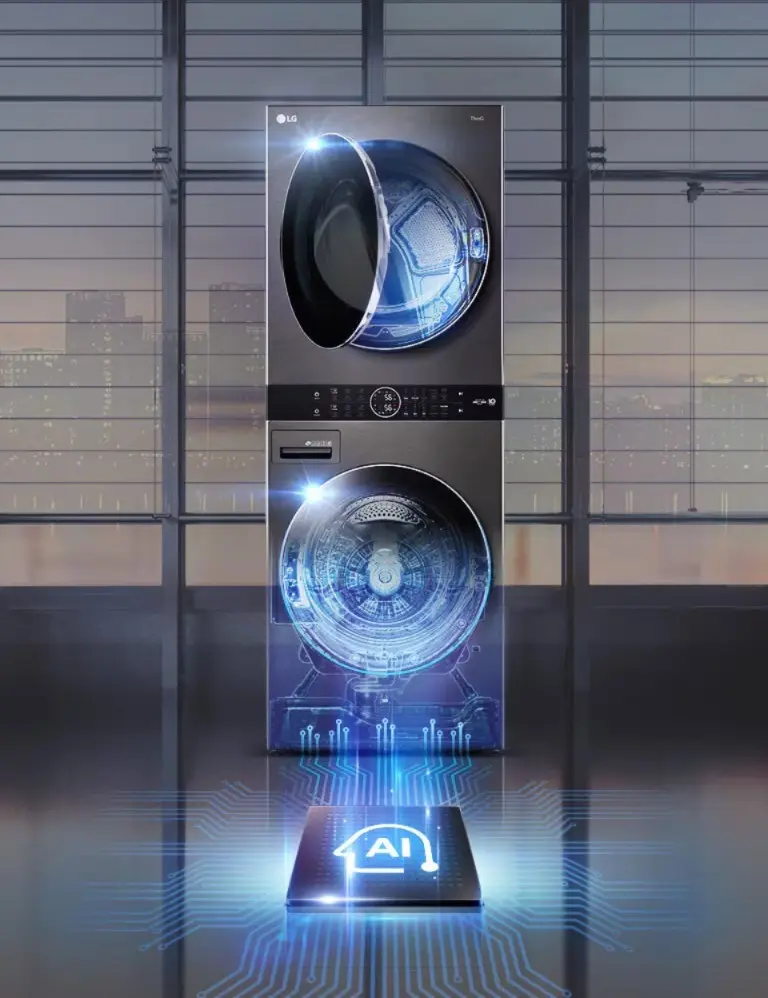
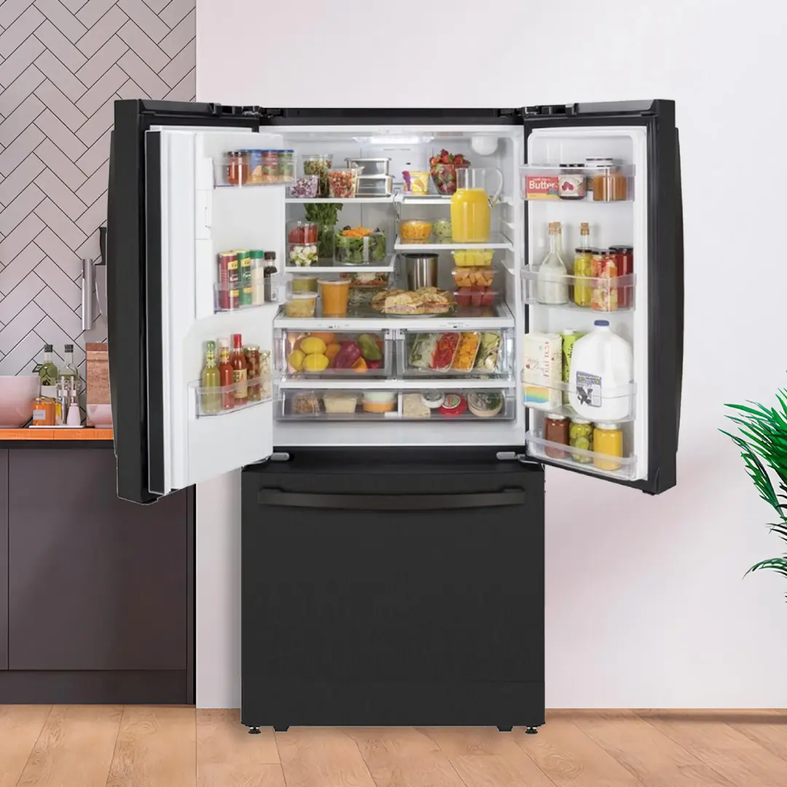
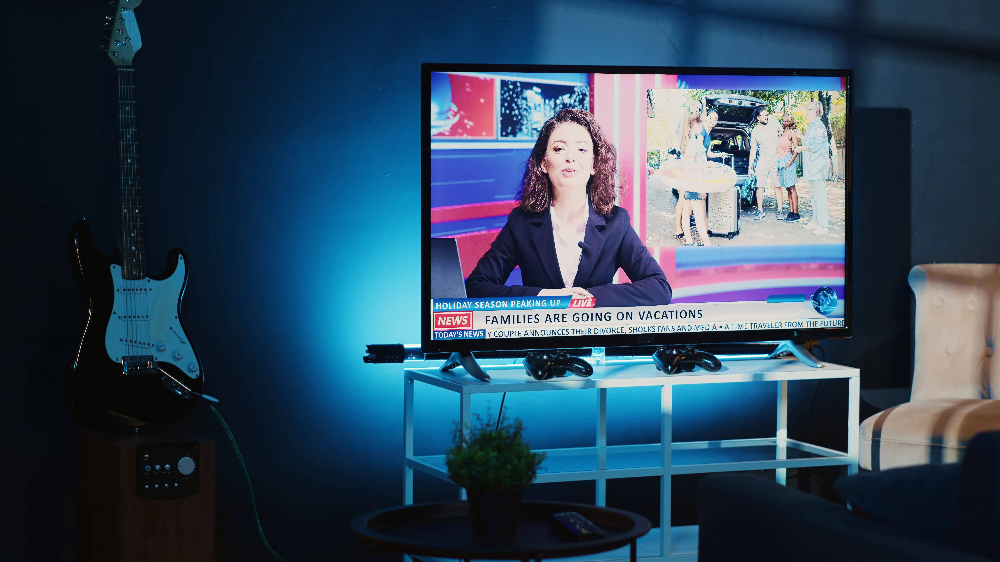

Lavadoras y Secadoras
Toque para ver detalleLavado y Secado
- Mantenimiento preventivo integral
- Corrección de filtraciones
- Calibración de sistemas digitales
- Solución de ruidos extraños
- Cambio de transmisiones y rodamientos
Reparación, instalación y mantenimiento de lavadoras, neveras, televisores, calentadores y secadoras. Servicio a domicilio en Tunja y todo Boyacá con garantía real.
Atendemos las principales marcas del mercado
Fundada en 2021, Tunja Technical Service nació con la firme misión de dignificar el servicio técnico de electrodomésticos en el departamento de Boyacá. Nos especializamos en la revisión, diagnóstico avanzado, instalación y mantenimiento de equipos residenciales y comerciales.
Nuestro equipo está conformado por ingenieros y técnicos expertos en electrónica digital y línea blanca, respaldados por una administración comprometida con brindar respuestas ágiles y transparentes. No solo reparamos aparatos: devolvemos la tranquilidad y el confort a los hogares boyacenses.
Formación continua en las últimas tecnologías
Solo piezas de calidad garantizada
Respaldo real en cada intervención
Atendemos en Tunja y todo Boyacá
Toque o pase el cursor sobre cada tarjeta para conocer el detalle del servicio




Escríbanos por WhatsApp describiendo el problema. Le respondemos en minutos.
Un técnico certificado visita su domicilio y evalúa el equipo sin costo oculto.
Realizamos la intervención con repuestos originales y herramienta especializada.
Entregamos garantía escrita. Su tranquilidad es nuestro compromiso final.
"Mi nevera Samsung llevaba dos semanas sin enfriar bien. Llamé al técnico en la mañana y en la tarde ya estaba en mi casa. Diagnosticó el problema en 20 minutos, cambió el compresor y al día siguiente estaba funcionando perfectamente. El precio fue justo y me dieron garantía por escrito. ¡100% recomendados!"
"Tenía un televisor LG de 55 pulgadas que no encendía. Otros técnicos me dijeron que no tenía reparación. Tunja Technical Service lo revisó a fondo, identificaron que era la tarjeta de poder y lo repararon a nivel de componente. Me ahorraron el costo de un TV nuevo. Profesionales de verdad."
"Mi lavadora Haceb hacía un ruido horrible al centrifugar. Los chicos vinieron puntual, encontraron que el rodamiento estaba dañado y lo cambiaron ese mismo día. El trabajo quedó limpio y no dejaron ningún desorden en la casa. Muy buena atención desde el primer mensaje de WhatsApp."
"El calentador de gas de mi casa empezó a fallar en pleno invierno boyacense. Llamo a Tunja Technical Service, me atienden ese mismo día hasta Duitama. Revisaron la válvula de gas, cambiaron el piloto y calibraron la presión. Agua caliente desde esa misma noche. Excelente servicio a domicilio."
"Contraté el mantenimiento preventivo de mi nevecón Challenger y mi lavadora Whirlpool. Los dos técnicos que llegaron fueron muy amables, explicaron cada paso del proceso y me dieron recomendaciones para cuidar los equipos. El precio del paquete fue muy razonable. ¡Ya tienen cliente fijo!"
"Necesitaba instalar un televisor nuevo en la sala. Vinieron a tiempo, instalaron el soporte en la pared correctamente y configuraron todo el sistema de sonido. Muy cuidadosos con la pared y muy rápidos. Adicional revisaron mi secadora que tenía fallas de temperatura sin costo extra. Excelente empresa."
Visítenos o solicite servicio a domicilio en toda la región
Calle 54 No 9-27
Barrio La Granja
Tunja, Boyacá
Lunes a Viernes: 8:00 am – 6:00 pm
Sábados: 8:00 am – 2:00 pm
Domingos: Previa cita
Tunja · Duitama · Sogamoso
Villa de Leyva · Paipa · Chiquinquirá
y todo el departamento de Boyacá
Atendemos en Tunja y todo el departamento de Boyacá. Respuesta rápida, diagnóstico honesto y garantía real.
Escribir por WhatsApp